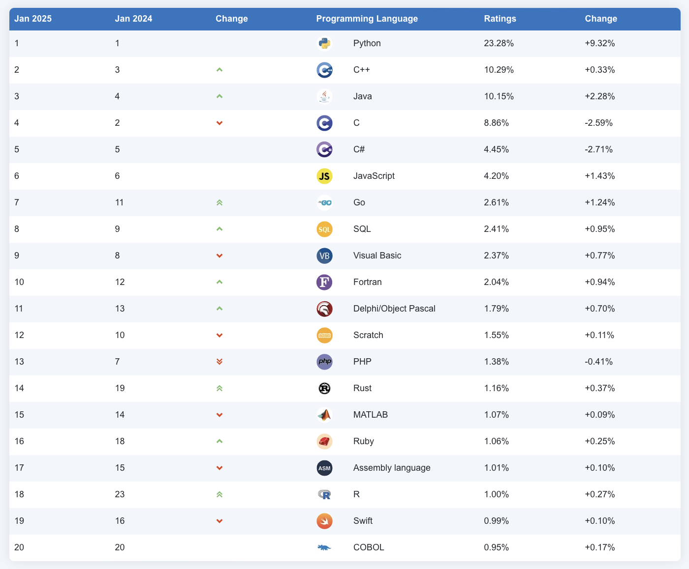

Notas de clase de la semana 1 de LPP.
3 bloques temáticos:
Temas:

En los turnos de teoría es posible, de forma excepcional, asistir a un grupo distinto del asignado. Los enlaces a las aulas online en las que se impartirán las clases son los siguientes:
En los turnos de prácticas se debe asistir al grupo al que se ha asignado. El cambio de turno deberá solicitarse en la Secretaría de la EPS.
No sirve de nada mirar las soluciones si no has trabajado
El objetivo de publicar la solución de los ejercicios es que corrijas tú propia solución comparándola con la publicada. En la clase de prácticas podrás preguntar a tu profesor cualquier duda que te pueda surgir de esta revisión. Esta es la forma correcta de aprender a programar. No sirve de nada aprender de memoria las soluciones si no has trabajado previamente los ejercicios.
La asignatura se divide en 3 bloques temáticos, todos ellos de igual duración, en los que se utilizará el lenguaje de programación que aparece entre paréntesis:
Se realizarán tres exámenes parciales escritos sobre los conceptos de cada uno de los bloques temáticos (teoría y práctica). Los parciales tendrán la siguiente ponderación en la nota final:
No se exige nota mínima en ninguno de los parciales. Los parciales 1 y 2 se realizarán durante el curso. El parcial 3 se realizará en la fecha del examen oficial de la convocatoria ordinaria de la asignatura.
Sobre los dispositivos móviles
Durante la realización de los exámenes no está permitido que llevéis encima ningún dispositivo con conexión a internet (smartphones, smart watches, tablets, etc). Antes de empezar la prueba, se deberán dejar dentro de las mochilas, y éstas en el suelo. En caso de no cumplir alguna esta norma, la prueba queda invalidada con calificación de 0.
Consejos:
Algunos comentarios:
Cómo dominar los conceptos
Para superar la asignatura lo que hice fue estudiar mucho. Hay que practicar y sobre todo entender los ejercicios y no sabérselos de memoria. Una vez dominados los ejercicios yo mismo me propuse variantes de los mismos. Así es como se domina.
No copiar las prácticas
El mayor problema que creo que existe es que muchas personas se relajan y se copian las prácticas en cuanto les resultan un poco difíciles o les lleva algo mas del tiempo que les gustaría. Esta asignatura si no haces tu los ejercicios y te peleas con ellos es prácticamente imposible de sacar.
No memorizar
Otra de las cosas es que tienes que cambiar la forma de estudiar, no vale memorizar, ni hacer muchos ejercicios sin más. Tienes que entender bien el funcionamiento de la recursión para luego poder practicar con ejercicios, sino no sirve. [...] En mi opinión el problema de LPP para mucha gente es que para los exámenes se memorizan los ejercicios de prácticas de las soluciones que se dan en clase.
Tema no presencial para estudiar en casa.
| 1950-1960 | 1970 | 1980 | 1990 | 2000 |
|---|---|---|---|---|
| 1957 FORTRAN | 1970 Pascal | 1980 Smalltalk-80 | 1990 Haskell | 2000 C# |
| 1958 ALGOL | 1972 Prolog | 1983 Objective-C | 1991 Python | 2003 Scala |
| 1960 Lisp | 1972 C | 1983 Ada | 1993 Ruby | 2003 Groovy |
| 1960 COBOL | 1975 Scheme | 1986 C++ | 1995 Java | 2009 Go |
| 1962 APL | 1975 Modula | 1986 Eiffel | 1995 Racket | 2014 Swift |
| 1964 BASIC | 1987 Perl | |||
| 1967 SIMULA |

La lista TIOBE se publica cada año indicando los lenguajes de programación más populares.


Un programa funcional es
Un conjunto de funciones matemáticas que convierten unas entradas en unas salidas, sin ningún estado interno y ningún efecto lateral.
Lenguajes modernos principalmente funcionales:
Lenguajes multi-paradigma en los que se puede usar POO y PF:
Lenguaje funcional puro más importante:
Algunos artículos y charlas:
El paradigma funcional facilita:
En la asignatura usaremos Scheme como primer lenguaje en el que exploraremos la programación funcional.
En el seminario de Scheme que se imparte en prácticas se estudiará en más profundidad los conceptos más importantes del lenguaje: tipos de datos, operadores, estructuras de control, intérprete, etc.
Vamos a empezar a ver ejemplo concretos de programación funcional viendo cómo se evalúan expresiones y cómo se definen funciones en Scheme.
2 ⇒ 2
(+ 2 3) ⇒ 5
(+) ⇒ 0
(+ 2 4 5 6) ⇒ 17
(+ (* 2 3) (- 3 1)) ⇒ 8
Se dice "evaluar una expresión" en lugar de "ejecutar una expresión".
Partes de una expresión:
Por ejemplo, ¿cuál es la evaluación de la siguiente expresión?:
(+ (* 2 3) (- 3 (/ 12 3)))
Definición
(define (cuadrado x)
(* x x))
Uso y evaluación:
(cuadrado 10) ⇒ 100
(cuadrado (+ 10 (cuadrado (+ 2 4)))) ⇒ 2116
Lo habitual en programación funcional es definir funciones muy pequeñas e ir construyendo funciones cada vez de mayor nivel usando las anteriores.
No demasiado bien:
(define (suma-cuadrados x y)
(+ (* x x) (* y y)))
(define (cuadrado x)
(* x x))
(define (suma-cuadrados x y)
(+ (cuadrado x) (cuadrado y)))

(define (conduce-vehiculo imagenes)
(obten-acciones
(reconoce
(filtra
(obten-caracteristicas imagenes)))))
Otro ejemplo de programación declarativa: SwiftUI.

(define (cuadrado x)
(* x x))
(cuadrado 4) ; devuelve 16
Características:
Pasos de ejecución en C:
int a = cuadrado(8);
int b = doble(a);
int c = cuadrado(b);
return c
En Swift:
filtrados = filtra(pedidos);
procesados = procesa(filtrados);
return procesados;
En programación funcional, en lugar de pasos de ejecución se utiliza como hemos visto la composición de funciones. Los ejemplos anteriores se expresan de la siguiente forma en programación funcional:
(cuadrado (doble (cuadrado 8)))
(procesa (filtra pedidos))
Asignación destructiva o mutación:
int x = 10;
int x = x + 1;
En programación funcional los valores definidos son inmutables:
#lang racket
(define a 12)
(define a 200)
tendremos el siguiente error:
module: identifier already defined in: a
En lenguajes imperativos también hay sentencias declarativas:
1. int x = 1; // declarativa
2. x = x+1; // imperativa
3. int y = x+1; // declarativa
4. y = x; // imperativa
Ejemplo de mutación:
Point2D p1 = new Point2D(3.0, 2.0); // la coord x de p1 es 3.0
p1.getCoordX(); // la coord x de p1 es 3.0
p1.setCoordX(10.0);
p1.getCoordX(); // la coord x de p1 es 10.0
Ejemplo de efecto lateral:
Point2D p1 = new Point2D(3.0, 2.0); // la coord x de p1 es 3.0
p1.getCoordX(); // la coord x de p1 es 3.0
Point2D p2 = p1;
p2.setCoordX(10.0);
p1.getCoordX(); // la coord x de p1 es 10.0, sin que ninguna sentencia haya modificado directamente p1
Función con estado local mutable en lenguaje imperativo (Java):
public class Contador {
int c;
public Contador(int valorInicial) {
c = valorInicial;
}
public int valor() {
c++;
return c;
}
}
Contador cont = new Contador(10);
cont.valor(); // 11
cont.valor(); // 12
cont.valor(); // 13
En C:
int function contador () {
static int c = 0;
c++;
return c;
}
contador() ;; 1
contador() ;; 2
contador() ;; 3
Por el contrario, los lenguajes funcionales puros tienen la propiedad de transparencia referencial: si se sustituye una expresión por su valor el resultado final no debe cambiar. -> funciones no modifican estado.
Características de la programación declarativa
Características de la programación imperativa
El modelo de sustitución es un modelo muy sencillo que permite definir la semántica de la evaluación de expresiones en lenguajes funcionales como Scheme.
Basado en la reescritura de unos términos por otros
Reglas del modelo de sustitución
define (se lanzará un error si no existe ese valor).+, -, ...), evaluamos uno a
uno los argumentos arg1 ... argn (con estas mismas reglas) y
evaluamos la función primitiva con los resultados.La regla 4 tiene dos variantes, dependiendo del orden de evaluación que utilizamos.
Orden aplicativo
define, tenemos
que evaluar primero los argumentos arg1 ... argn y después
sustituir f por su cuerpo, reemplazando cada parámetro
formal de la función por el correspondiente argumento
evaluado. Después evaluaremos la expresión resultante usando
estas mismas reglas.Orden normal
define, tenemos
que sustituir f por su cuerpo, reemplazando cada
parámetro formal de la función por el correspondiente
argumento sin evaluar. Después evaluar la expresión
resultante usando estas mismas reglas.Ambas formas de evaluación darán el mismo resultado en programación funcional. Scheme utiliza el orden aplicativo.
En el orden aplicativo se realizan las evaluaciones antes de realizar las sustituciones, lo que define una evaluación de dentro a fuera de los paréntesis. Cuando se llega a una expresión primitiva se evalúa.
En el orden normal se realizan todas las sustituciones hasta que se tiene una larga expresión formada por expresiones primitivas; se evalúa entonces.
Comprobamos las sustituciones en cada tipo de orden.
(define (doble x)
(+ x x))
(define (cuadrado y)
(* y y))
(define a 2)
(doble (cuadrado a))
Orden aplicativo:
(doble (cuadrado a)) ⇒ ; Sustituimos a por su valor (R2)
(doble (cuadrado 2)) ⇒ ; Sustitumos cuadrado por su cuerpo (R4)
(doble (* 2 2)) ⇒ ; Evaluamos (* 2 2) (R3)
(doble 4) ⇒ ; Sustituimos doble por su cuerpo (R4)
(+ 4 4) ⇒ ; Evaluamos (+ 4 4) (R3)
8
Orden normal:
(doble (cuadrado a)) ⇒ ; Sustituimos doble por su cuerpo (R4)
(+ (cuadrado a) (cuadrado a) ⇒ ; Sustituimos cuadrado por su cuerpo (R4)
(+ (* a a) (* a a) ⇒ ; Sustitumos a por su valor (R2)
(+ (* 2 2) (* 2 2) ⇒ ; Evaluamos (* 2 2) (R3)
(+ 4 (* 2 2)) ⇒ ; Evaluamos (* 2 2) (R3)
(+ 4 4) ⇒ ; Evaluamos (+ 4 4) (R3)
8
Ejemplo de resultado distinto con funciones no puras:
(define (zero x) (- x x))
(zero (random 10))
defineSintaxis
(define <identificador> <expresión>)
Evaluación
Ejemplo
(define base 10) ; Asociamos a 'base' el valor 10
(define altura 12) ; Asociamos a 'altura' el valor 12
(define area (/ (* base altura) 2)) ; Asociamos a 'area' el valor 60
define para definir funcionesSintaxis
(define (<nombre-funcion> <argumentos>)
<cuerpo>)
Evaluación
Ejemplo
(define (factorial x)
(if (= x 0)
1
(* x (factorial (- x 1)))))
ifSintaxis
(if <condición> <expresión-true> <expresión-false>)
Evaluación
#t evaluar la expresión-true, en otro
caso, evaluar la expresión-falseEjemplo
(if (> 10 5) (substring "Hola qué tal" (+ 1 1) 4) (/ 12 0))
;; Evaluamos (> 10 5). Como el resultado es #t, evaluamos
;; (substring "Hola qué tal" (+ 1 1) 4), que devuelve "la"
condSintaxis
(cond
(<exp-cond-1> <exp-consec-1>)
(<exp-cond-2> <exp-consec-2>)
...
(else <exp-consec-else>))
Evaluación
#t#t, se devuelve el valor del
consecuente de esa expresiónelseEjemplo
(cond
((> 3 4) "3 es mayor que 4")
((< 2 1) "2 es menor que 1")
((= 3 1) "3 es igual que 1")
((> 3 5) "3 es mayor que 2")
(else "ninguna condición es cierta"))
;; Se evalúan una a una las expresiones (> 3 4),
;; (< 2 1), (= 3 1) y (> 3 5). Como ninguna de ella
;; es cierta se devuelve la cadena "ninguna condición es cierta"
quote y símbolosSintaxis
(quote <identificador>)
Evaluación
'.Ejemplo
(quote x) ; el símbolo x
'hola ; el símbolo hola
En Scheme los identificadores (nombres que se les da a las variables) son datos del lenguaje de tipo symbol.
Los símbolos son distintos de las cadenas. Una cadena es un tipo de dato compuesto formado por caracteres que podemos concatenar, dividir en subcadenas, etc. Nada de esto lo podemos hacer con un símbolo. Un símbolo es un tipo atómico, es sólo un identificador.
Ejemplos de funciones Scheme con símbolos:
(define x 12)
(symbol? 'x) ; ⇒ #t
(symbol? x) ; ⇒ #f ¿Por qué?
(symbol? 'hola-que<>)
(symbol->string 'hola-que<>)
'mañana
'lápiz ; aunque sea posible, no vamos a usar acentos en los símbolos
; pero sí en los comentarios
(symbol? "hola") ; #f
(symbol? #f) ; #f
(symbol? (car '(hola cómo estás))) ; #t
(equal? 'hola 'hola)
(equal? 'hola "hola")
Un símbolo es un identificador que puede asociarse o ligarse (bind) a un valor (cualquier dato de primera clase).
Cuando escribimos un símbolo en el prompt de Scheme el intérprete lo evalúa y devuelve su valor:
(define pi 3.14159)
pi
⇒3.14159
Los nombres de las funciones (equal?,sin, `+, ...) son también
símbolos (los de las macros no) y Scheme también los evalúa (en un par
de semanas hablaremos de las funciones como objetos primitivos en
Scheme):
sin
⇒ #<procedure:sin>
+
⇒ #<procedure:+>
(define (cuadrado x) (* x x))
⇒ #<procedure:cuadrado>
Los símbolos son tipos primitivos del lenguaje: pueden pasarse como parámetros o ligarse a variables.
(define x 'hola)
x
⇒ hola
quote y expresionesSintaxis
(quote <expresión>)
Evaluación
Si quote recibe una expresión correcta de Scheme (una expresión
entre paréntesis) se devuelve la lista o pareja pareja definida por la
expresión (sin evaluar sus elementos).
Ejemplos
'(1 2 3) ; ⇒ (1 2 3) Una lista
'(+ 1 2 3 4) ; La lista formada por el símbolo + y los números 1 2 3 4
(quote (1 2 3 4)) ; La lista formada por los números 1 2 3 4
'(a b c) ; ⇒ La lista con los símbolos a, b, y c
'(* (+ 1 (+ 2 3)) 5) ; Una lista con 3 elementos, el segundo de ellos otra lista
'(1 . 2) ; ⇒ La pareja (1 . 2)
'((1 . 2) (2 . 3)) ; ⇒ Una lista con las parejas (1 . 2) y (2 . 3)
En el seminario de Scheme hemos visto que una de sus características principales es el uso de listas.
Repasamos las funciones más importantes y explicamos el uso de la
forma especial quote para construir listas.
list y forma especial quotelist(list 1 2 3 4 5) ⇒ (1 2 3 4)
(list 'a 'b 'c) ⇒ (a b c)
(list 1 'a 2 'b 3 'c #t) ⇒ (1 a 2 b 3 c #t)
(list 1 (+ 1 1) (* 2 (+ 1 2))) ⇒ (1 2 6)
Otro ejemplo:
(define a 1)
(define b 2)
(define c 3)
(list a b c) ; ⇒ (1 2 3)
quote delante de una expresión entre paréntesis
convierte la expresión en una lista y la devuelve:'(1 2 3 4) ; ⇒ (1 2 3 4)
(define a 1)
(define b 2)
(define c 3)
'(a b c) ; ⇒ (a b c)
'(1 (+ 1 1) (* 2 (+ 1 2))) ; ⇒ (1 (+ 1 1) (* 2 (+ 1 2)))
La última lista tiene 3 elementos:
La lista (* 2 (+ 1 2))
Otro ejemplo sobre la diferencia entre list y quote:
(list 1 (/ 2 3) (+ 2 3)) ; ⇒ (1 2/3 5)
'(1 (/ 2 3) (+ 2 3)) ; ⇒ (1 (/ 2 3) (+ 2 3))
car y cdrcarcdrEjemplos:
(define lista1 '(1 2 3 4))
(car lista1) ; ⇒ 1
(cdr lista1) ; ⇒ (2 3 4)
(define lista2 '((1 2) 3 4))
(car lista2) ; ⇒ (1 2)
(cdr lista2) ; ⇒ (3 4)
cons y appendcons añade un elemento a la cabeza de una lista(cons 1 '(1 2 3 4)) ; ⇒ (1 1 2 3 4)
(cons 'hola '(como estás)) ; ⇒ (hola como estás)
(cons '(1 2) '(1 2 3 4)) ; ⇒ ((1 2) 1 2 3 4)
append concatena dos o más listas(define list1 '(1 2 3 4))
(define list2 '(hola como estás))
(append list1 list2) ; ⇒ (1 2 3 4 hola como estás)